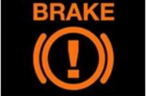
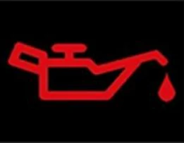
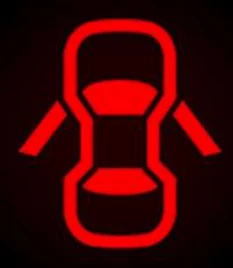
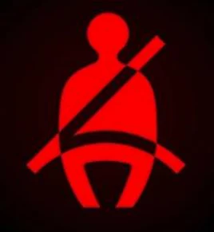
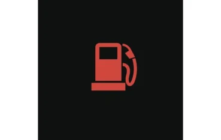

Lý thuyết lái xe · Chương 3
Kỹ thuật lái xe
Ôn thao tác điều khiển xe, cách xử lý khi lên xuống dốc và lựa chọn kỹ thuật lái trong từng tình huống.
58 câu hỏi, từ câu 206 đến câu 263. Nguồn nội dung · Bộ 600 câu hỏi dùng cho sát hạch lái xe cơ giới đường bộ · Cục CSGT, 2025.
Đi đến nhóm câu hỏi
Câu hỏi và đáp án
Câu 206 Khi điều khiển xe mô tô tay ga xuống đường dốc dài, độ dốc cao, người lái xe cần thực hiện các thao tác nào dưới đây để bảo đảm an toàn?
- Giữ tay ga ở mức độ phù hợp, sử dụng phanh trước và phanh sau để giảm tốc độ.
- Nhả hết tay ga, tắt động cơ, sử dụng phanh trước và phanh sau để giảm tốc độ.
- Sử dụng phanh trước để giảm tốc độ kết hợp với tắt chìa khóa điện của xe.
Xem đáp án
A. Giữ tay ga ở mức độ phù hợp, sử dụng phanh trước và phanh sau để giảm tốc độ.
Câu 207 Khi vào số để khởi hành xe ô tô có số tự động, người lái xe phải thực hiện các thao tác nào để bảo đảm an toàn?
- Đạp bàn đạp phanh chân hết hành trình, vào số và nhả phanh đỗ, kiểm tra lại xem có bị nhầm số không rồi mới cho xe lăn bánh.
- Đạp bàn đạp để tăng ga với mức độ phù hợp, vào số và kiểm tra lại xem có bị nhầm số không rồi mới cho xe lăn bánh.
Xem đáp án
A. Đạp bàn đạp phanh chân hết hành trình, vào số và nhả phanh đỗ, kiểm tra lại xem có bị nhầm số không rồi mới cho xe lăn bánh.
Câu 208 Khi nhả phanh đỗcơ khí điều khiển bằng tay (phanh tay), người lái xe cần phải thực hiện các thao tác nào?
- Dùng lực tay phải kéo cần phanh tay về phía sau hết hành trình; nếu khóa hãm bị kẹt cứng phải đẩy mạnh phanh tay về phía trước, sau đó bóp khóa hãm.
- Dùng lực tay phải bóp khóa hãm đẩy cần phanh tay về phía trước hết hành trình; nếu khóa hãm bị kẹt cứng phải kéo cần phanh tay về phía sau đồng thời bóp khóa hãm.
- Dùng lực tay phải đẩy cần phanh tay về phía trước hết hành trình; nếu khóa hãm bị kẹt cứng phải đẩy mạnh phanh tay về phía trước, sau đó bóp khóa hãm.
Xem đáp án
B. Dùng lực tay phải bóp khóa hãm đẩy cần phanh tay về phía trước hết hành trình; nếu khóa hãm bị kẹt cứng phải kéo cần phanh tay về phía sau đồng thời bóp khóa hãm.
Câu 209 Khi khởi hành ô tô sử dụng hộp số cơ khí trên đường bằng, người lái xe cần thực hiện các thao tác nào theo trình tự dưới đây?
- Kiểm tra an toàn xung quanh xe ô tô; nhả từ từ đến 1/2 hành trình bàn đạp ly hợp (côn) và giữ trong khoảng 3 giây; vào số 1; nhả hết phanh tay, báo hiệu bằng còi, đèn trước khi xuất phát; tăng ga đủ để xuất phát, sau đó vừa tăng ga vừa nhả hết côn để cho xe ô tô chuyển động.
- Kiểm tra an toàn xung quanh xe ô tô; đạp ly hợp (côn) hết hành trình; vào số 1; nhả hết phanh tay, báo hiệu bằng còi, đèn trước khi xuất phát; tăng ga đủ để xuất phát; nhả từ từ đến 1/2 hành trình bàn đạp côn và giữ trong khoảng 3 giây, sau đó vừa tăng ga vừa nhả hết côn để cho xe ô tô chuyển động.
Xem đáp án
B. Kiểm tra an toàn xung quanh xe ô tô; đạp ly hợp (côn) hết hành trình; vào số 1; nhả hết phanh tay, báo hiệu bằng còi, đèn trước khi xuất phát; tăng ga đủ để xuất phát; nhả từ từ đến 1/2 hành trình bàn đạp côn và giữ trong khoảng 3 giây, sau đó vừa tăng ga vừa nhả hết côn để cho xe ô tô chuyển động.
Câu 210 Khi quay đầu xe, người lái xe cần phải quan sát và thực hiện các thao tác nào để bảo đảm an toàn giao thông?
- Quan sát biển báo hiệu để biết nơi được phép quay đầu; quan sát kỹ địa hình nơi chọn để quay đầu; lựa chọn quỹ đạo quay đầu xe cho thích hợp; quay đầu xe với tốc độ thấp; thường xuyên báo tín hiệu để người, các phương tiện xung quanh được biết; nếu quay đầu xe ở nơi nguy hiểm thì đưa đầu xe về phía nguy hiểm, đưa đuôi xe về phía an toàn.
- Quan sát biển báo hiệu để biết nơi được phép quay đầu; quan sát kỹ địa hình nơi chọn để quay đầu; lựa chọn quỹ đạo quay đầu xe; quay đầu xe với tốc độ tối đa; thường xuyên báo tín hiệu để người, các phương tiện xung quanh được biết; nếu quay đầu xe ở nơi nguy hiểm thì đưa đuôi xe về phía nguy hiểm và đầu xe về phía an toàn.
Xem đáp án
A. Quan sát biển báo hiệu để biết nơi được phép quay đầu; quan sát kỹ địa hình nơi chọn để quay đầu; lựa chọn quỹ đạo quay đầu xe cho thích hợp; quay đầu xe với tốc độ thấp; thường xuyên báo tín hiệu để người, các phương tiện xung quanh được biết; nếu quay đầu xe ở nơi nguy hiểm thì đưa đầu xe về phía nguy hiểm, đưa đuôi xe về phía an toàn.
Câu 211 Khi ngồi lái ô tô tư thế chân, lưng, tay của người lái xe như thế nào là đúng để bảo đảm an toàn và thoải mái?
- Điều chỉnh ghế sao cho chân có thể đạp phanh và ga dễ dàng, ngồi thẳng lưng, hai tay nắm vô lăng, tay trái nắm ở vị trí 9 đến 10 giờ và tay phải nắm ở vị trí từ 2 đến 4 giờ.
- Ngồi sát vô lăng để dễ quan sát hoặc ngồi tự do, không cần điều chỉnh ghế.
- Ngồi ngả người về phía sau nhiều để thư giãn, chân trái để ở vị trí chân ga, hai tay nắm vô lăng ở vị trí bất kỳ.
Xem đáp án
A. Điều chỉnh ghế sao cho chân có thể đạp phanh và ga dễ dàng, ngồi thẳng lưng, hai tay nắm vô lăng, tay trái nắm ở vị trí 9 đến 10 giờ và tay phải nắm ở vị trí từ 2 đến 4 giờ.
Câu 212 Khi điều khiển ô tô lên dốc cao, người lái xe cần thực hiện các thao tác nào dưới đây để bảo đảm an toàn?
- Tăng lên số cao từ chân dốc, điều chỉnh ga cho xe nhanh lên dốc; đến gần đỉnh dốc phải tăng ga để xe nhanh chóng qua dốc; về số thấp, đi sát về phía bên phải đường, có tín hiệu (còi, đèn) để báo cho người lái xe đi ngược chiều biết.
- Về số thấp từ chân dốc, điều chỉnh ga cho xe từ từ lên dốc; đến gần đỉnh dốc phải đi chậm, đi sát về phía bên phải đường, có tín hiệu (còi, đèn) để báo cho người lái xe đi ngược chiều biết.
Xem đáp án
B. Về số thấp từ chân dốc, điều chỉnh ga cho xe từ từ lên dốc; đến gần đỉnh dốc phải đi chậm, đi sát về phía bên phải đường, có tín hiệu (còi, đèn) để báo cho người lái xe đi ngược chiều biết.
Câu 213 Khi điều khiển ô tô xuống dốc dài, người lái xe cần thực hiện các thao tác nào dưới đây để bảo đảm an toàn?
- Tăng lên số cao, nhả bàn đạp ga ở mức độ phù hợp, kết hợp với phanh chân để khống chế tốc độ.
- Về số thấp, nhả bàn đạp ga ở mức độ phù hợp, kết hợp với phanh chân để khống chế tốc độ.
- Về số không (0), nhả bàn đạp ga ở mức độ phù hợp, kết hợp với phanh chân để khống chế tốc độ.
Xem đáp án
B. Về số thấp, nhả bàn đạp ga ở mức độ phù hợp, kết hợp với phanh chân để khống chế tốc độ.
Câu 214 Khi xuống dốc, muốn dừng xe, người lái xe cần thực hiện các thao tác nào để bảo đảm an toàn?
- Có tín hiệu rẽ phải, điều khiển xe sát vào lề đường bên phải; đạp phanh sớm và mạnh hơn lúc dừng xe trên đường bằng để xe đi với tốc độ chậm đến mức dễ dàng dừng lại được; về số 1, đạp 1/2 ly hợp (côn) cho xe đến chỗ dừng; khi xe đã dừng, về số không (N), đạp phanh chân, sử dụng phanh đỗ.
- Có tín hiệu rẽ phải, điều khiển xe sát vào lề đường bên trái; đạp hết hành trình ly hợp (côn) và nhả bàn đạp ga để xe đi với tốc độ chậm đến mức dễ dàng dừng lại được tại chỗ dừng; khi xe đã dừng, đạp và giữ phanh chân.
- Có tín hiệu rẽ trái, điều khiển xe sát vào lề đường bên phải; đạp phanh sớm và mạnh hơn lúc dừng xe trên đường bằng để xe đi với tốc độ chậm đến mức dễ dàng dừng lại được; về số không (N) để xe đi đến chỗ dừng, khi xe đã dừng, sử dụng phanh đỗ.
Xem đáp án
A. Có tín hiệu rẽ phải, điều khiển xe sát vào lề đường bên phải; đạp phanh sớm và mạnh hơn lúc dừng xe trên đường bằng để xe đi với tốc độ chậm đến mức dễ dàng dừng lại được; về số 1, đạp 1/2 ly hợp (côn) cho xe đến chỗ dừng; khi xe đã dừng, về số không (N), đạp phanh chân, sử dụng phanh đỗ.
Câu 215 Khi điều khiển xe trên đường vòng người lái xe cần phải làm gì để bảo đảm an toàn?
- Quan sát cẩn thận các chướng ngại vật và báo hiệu bằng coi, đèn; giảm tốc độ tới mức cần thiết, về số thấp và thực hiện quay vòng với tốc độ phù hợp với bán kính cong của đường vòng.
- Quan sát cẩn thận các chướng ngại vật và báo hiệu bằng còi, đèn; tăng tốc để nhanh chóng qua đường vòng và giảm tốc độ sau khi qua đường vòng.
Xem đáp án
A. Quan sát cẩn thận các chướng ngại vật và báo hiệu bằng coi, đèn; giảm tốc độ tới mức cần thiết, về số thấp và thực hiện quay vòng với tốc độ phù hợp với bán kính cong của đường vòng.
Câu 216 Khi điều khiển xe ô tô rẽ phải, người lái xe cần thực hiện các thao tác nào để bảo đảm an toàn?
- Có tín hiệu rẽ phải; quan sát an toàn phía sau; điều khiển xe sang làn đường bên trái; giảm tốc độ và quan sát an toàn phía bên phải để điều khiển xe qua chỗ đường giao nhau.
- Cách chỗ rẽ một khoảng cách an toàn có tín hiệu rẽ phải; giảm tốc độ, quan sát an toàn phía trước, sau, bên phải và điều khiển xe từ từ rẽ phải.
- Cách chỗ rẽ một khoảng cách an toàn có tín hiệu rẽ phải; quan sát an toàn phía sau; điều khiển xe bám sát vào phía phải đường; tăng tốc độ và quan sát an toàn phía bên trái để điều khiển xe qua chỗ đường giao nhau.
Xem đáp án
B. Cách chỗ rẽ một khoảng cách an toàn có tín hiệu rẽ phải; giảm tốc độ, quan sát an toàn phía trước, sau, bên phải và điều khiển xe từ từ rẽ phải.
Câu 217 Khi điều khiển xe ô tô rẽ trái, người lái xe cần thực hiện các thao tác nào để bảo đảm an toàn?
- Cách chỗ rẽ một khoảng cách an toàn có tín hiệu rẽ trái; giảm tốc độ, quan sát an toàn xung quanh đặc biệt là bên trái; đổi sang làn đường bên trái và điều khiển xe từ từ rẽ trái.
- Cách chỗ rẽ một khoảng cách an toàn có tín hiệu rẽ trái, tăng tốc độ để xe nhanh chóng qua chỗ đường giao nhau; có tín hiệu xin đổi làn đường; quan sát an toàn xung quanh đặc biệt là bên trái; đổi làn đường sang phải để mở rộng vòng cua.
Xem đáp án
A. Cách chỗ rẽ một khoảng cách an toàn có tín hiệu rẽ trái; giảm tốc độ, quan sát an toàn xung quanh đặc biệt là bên trái; đổi sang làn đường bên trái và điều khiển xe từ từ rẽ trái.
Câu 218 Khi điều khiển xe sử dụng hộp số cơ khí vượt qua rãnh lớn cắt ngang mặt đường, người lái xe cần thực hiện các thao tác nào để đảm bảo an toàn?
- Vào số một (1) và từ từ cho hai bánh xe trước xuống rãnh, tăng ga cho hai bánh xe trước vượt lên khỏi rãnh, tăng số, tăng tốc độ để bánh xe sau vượt qua rãnh.
- Tăng ga, tăng số để hai bánh xe trước và bánh xe sau vượt qua khỏi rãnh và chạy bình thường.
- Vào số một (1) và từ từ cho hai bánh xe trước xuống rãnh, tăng ga cho hai bánh xe trước vượt lên khỏi rãnh, tiếp tục để bánh xe sau từ từ xuống rãnh rồi tăng dần ga cho xe ô tô lên khỏi rãnh.
Xem đáp án
C. Vào số một (1) và từ từ cho hai bánh xe trước xuống rãnh, tăng ga cho hai bánh xe trước vượt lên khỏi rãnh, tiếp tục để bánh xe sau từ từ xuống rãnh rồi tăng dần ga cho xe ô tô lên khỏi rãnh.
Câu 219 Khi điều khiển xe qua đường sắt, người lái xe cần phải thực hiện các thao tác nào dưới đây để bảo đảm an toàn?
- Khi có chuông báo hoặc thanh chắn đã hạ xuống, người lái xe phải dừng xe tạm thời đúng khoảng cách an toàn, kéo phanh tay nếu đường dốc hoặc phải chờ lâu.
- Khi không có chuông báo hoặc thanh chắn không hạ xuống, người lái xe cần phải quan sát nếu thấy đủ điều kiện an toàn thì về số thấp, tăng ga nhẹ và không thay đổi số trong quá trình vượt qua đường sắt để tránh động cơ chết máy cho xe cho vượt qua.
- Cả hai ý trên.
Xem đáp án
C. Cả hai ý trên.
Câu 220 Khi điều khiển xe ô tô tự đổ, người lái xe cần chú ý những điểm gì để bảo đảm an toàn?
- Khi chạy trên đường xấu, nhiều ổ gà nên chạy chậm để thùng xe không bị lắc mạnh, không gây hiện tượng lệch "ben"; khi chạy vào đường vòng, cần giảm tốc độ, không lấy lái gấp và không phanh gấp.
- Khi chạy trên đường quốc lộ, đường bằng phẳng không cần hạ hết thùng xe xuống.
- Khi đổ hàng phải chọn vị trí có nền đường cứng và phẳng, dừng hẳn xe, kéo hết phanh đỗ; sau đó mới điều khiển cơ cấu nâng "ben" để đổ hàng, đổ xong hàng mới hạ thùng xuống.
- Ý 1 và ý 3.
Xem đáp án
D. Ý 1 và ý 3.
Câu 221 Khi điều khiển xe tăng số, người lái xe cần chú ý những điểm gì để bảo đảm an toàn?
- Không được nhìn xuống buồng lái, cần phải tăng thứ tự từ thấp đến cao, phối hợp các động tác phải nhịp nhàng, chính xác.
- Nhìn xuống buồng lái để biết chính xác vị trí các tay số, cần phải tăng thứ tự từ thấp đến cao, phối hợp các động tác phải nhịp nhàng, vù ga phải phù hợp với tốc độ.
Xem đáp án
A. Không được nhìn xuống buồng lái, cần phải tăng thứ tự từ thấp đến cao, phối hợp các động tác phải nhịp nhàng, chính xác.
Câu 222 Khi điều khiển xe giảm số, người lái xe cần phải chú ý những điểm gì để bảo đảm an toàn?
- Nhìn xuống buồng lái để biết chính xác vị trí các tay số, cần phải giảm thứ tự từ cao xuống thấp, phối hợp các động tác phải nhịp nhàng, chính xác.
- Không được nhìn xuống buồng lái, cần phải giảm thứ tự từ cao xuống thấp, phối hợp các động tác phải nhịp nhàng, chính xác, vù ga phải phù hợp với tốc độ.
Xem đáp án
B. Không được nhìn xuống buồng lái, cần phải giảm thứ tự từ cao xuống thấp, phối hợp các động tác phải nhịp nhàng, chính xác, vù ga phải phù hợp với tốc độ.
Câu 223 Để giảm tốc độ khi ô tô đi xuống đường dốc dài, người lái xe phải thực hiện các thao tác nào để bảo đảm an toàn?
- Nhả bàn đạp ga, đạp ly hợp (côn) hết hành trình, đạp mạnh phanh chân để giảm tốc độ.
- Về số thấp phù hợp, nhả bàn đạp ga, kết hợp đạp phanh chân với mức độ phù hợp để giảm tốc độ.
- Nhả bàn đạp ga, tăng lên số cao, đạp phanh chân với mức độ phù hợp để giảm tốc độ.
Xem đáp án
B. Về số thấp phù hợp, nhả bàn đạp ga, kết hợp đạp phanh chân với mức độ phù hợp để giảm tốc độ.
Câu 224 Khi điều khiển ô tô qua đường ngập nước, người lái xe cần thực hiện các thao tác nào để đảm bảo an toàn?
- Tăng lên số cao, tăng ga và giảm ga liên tục để thay đổi tốc độ, giữ vững tay lái để ô tô vượt qua đoạn đường ngập nước.
- Đạp ly hợp (côn) hết hành trình, tăng ga và giảm ga liên tục để thay đổi tốc độ, giữ vững tay lái để ô tô vượt qua đoạn đường ngập nước.
- Quan sát, ước lượng độ ngập nước mà xe ô tô có thể vượt qua an toàn, về số thấp, giữ đều ga và giữ vững tay lái để ô tô vượt qua đoạn đường ngập nước.
Xem đáp án
C. Quan sát, ước lượng độ ngập nước mà xe ô tô có thể vượt qua an toàn, về số thấp, giữ đều ga và giữ vững tay lái để ô tô vượt qua đoạn đường ngập nước.
Câu 225 Khi điều khiển xe ô tô tới gần xe chạy ngược chiều vào ban đêm, người lái xe cần thực hiện các thao tác nào để bảo đảm an toàn?
- Chuyển từ đèn chiếu xa sang đèn chiếu gần; không nhìn thẳng vào đèn của xe chạy ngược chiều mà nhìn chếch sang phía phải theo chiều chuyển động của xe mình.
- Chuyển từ đèn chiếu gần sang đèn chiếu xa; không nhìn thẳng vào đèn của xe chạy ngược chiều mà nhìn chếch sang phía phải theo chiều chuyển động của xe mình.
- Chuyển từ đèn chiếu xa sang đèn chiếu gần; nhìn thẳng vào đèn của xe chạy ngược chiều để tránh xe bảo đảm an toàn.
Xem đáp án
A. Chuyển từ đèn chiếu xa sang đèn chiếu gần; không nhìn thẳng vào đèn của xe chạy ngược chiều mà nhìn chếch sang phía phải theo chiều chuyển động của xe mình.
Câu 226 Khi điều khiển xe ô tô trên đường trơn cần chú ý những điểm gì để bảo đảm an toàn?
- Giữ vững tay lái cho xe đi đúng vệt bánh xe đi trước, sử dụng số thấp đi chậm, giữ đều ga, đánh lái ngoặt và phanh gấp khi cần thiết.
- Giữ vững tay lái cho xe đi đúng vệt bánh xe đi trước, sử dụng số thấp đi chậm, gài cầu (nếu có), giữ đều ga, không lấy nhiều lái, không đánh lái ngoặt và phanh gấp.
Xem đáp án
B. Giữ vững tay lái cho xe đi đúng vệt bánh xe đi trước, sử dụng số thấp đi chậm, gài cầu (nếu có), giữ đều ga, không lấy nhiều lái, không đánh lái ngoặt và phanh gấp.
Câu 227 Khi động cơ xe ô tô đã khởi động, bảng đồng hồ xuất hiện ký hiệu như hình vẽ dưới đây là báo hiệu tình trạng gì của xe ô tô?

- Đang sử dụng phanh đỗ.
- Nhiệt độ nước làm mát quá mức cho phép.
- Cửa xe đang mở.
Xem đáp án
A. Đang sử dụng phanh đỗ.
Câu 228 Khi động cơ xe ô tô đã khởi động, bảng đồng hồ xuất hiện ký hiệu như hình vẽ dưới đây là báo hiệu tình trạng gì của xe ô tô?

- Đang sử dụng phanh đỗ.
- Thiếu dầu phanh.
- Nhiệt độ nước làm mát tăng quá mức cho phép.
- Áp suất dầu ở mức thấp.
Xem đáp án
D. Áp suất dầu ở mức thấp.
Câu 229 Khi động cơ xe ô tô đã khởi động, bảng đồng hồ xuất hiện ký hiệu như hình vẽ dưới đây là báo hiệu tình trạng gì của xe ô tô?

- Cửa xe đóng chưa chặt hoặc có cửa xe chưa đóng.
- Bộ nạp ắc quy gặp sự cố kỹ thuật.
- Dầu bôi trơn bị thiếu.
- Ý 2 và ý 3.
Xem đáp án
A. Cửa xe đóng chưa chặt hoặc có cửa xe chưa đóng.
Câu 230 Khi động cơ xe ô tô đã khởi động, bảng đồng hồ xuất hiện ký hiệu như hình vẽ dưới đây là báo hiệu tình trạng gì của xe ô tô?

- Thiếu dầu phanh, phanh tay đang hãm.
- Hệ thống túi khí an toàn gặp sự cố.
- Lái xe và người ngồi ghế trước chưa cài dây đai an toàn.
- Cửa đóng chưa chặt, có cửa chưa đóng.
Xem đáp án
C. Lái xe và người ngồi ghế trước chưa cài dây đai an toàn.
Câu 231 Khi động cơ xe ô tô đã khởi động, bảng đồng hồ xuất hiện ký hiệu như hình vẽ dưới đây là báo hiệu tình trạng gì của xe ô tô?

- Báo hiệu thiếu dầu phanh.
- Áp suất lốp không đủ.
- Đang sử dụng phanh đỗ.
- Sắp hết nhiên liệu.
Xem đáp án
D. Sắp hết nhiên liệu.
Câu 232 Trong các loại nhiên liệu dưới đây, loại nhiên liệu nào giảm thiểu ô nhiễm môi trường?
- Xăng và dầu diesel.
- Xăng sinh học và khí sinh học.
- Ý 1 và ý 2.
Xem đáp án
B. Xăng sinh học và khí sinh học.
Câu 233 Các biện pháp tiết kiệm nhiên liệu khi chạy xe?
- Bảo dưỡng xe theo định kỳ và có kế hoạch lộ trình trước khi xe chạy.
- Kiểm tra áp suất lốp theo quy định và chạy xe với tốc độ phù hợp với tình trạng mặt đường và mật độ giao thông trên đường.
- Cả hai ý trên.
Xem đáp án
C. Cả hai ý trên.
Câu 234 Khi đã đỗ xe ô tô sát lề đường bên phải, người lái xe phải thực hiện các thao tác nào dưới đây khi mở cửa xuống xe để đảm bảo an toàn?
- Quan sát tình hình giao thông phía trước, phía sau và phía bên mở cửa xe, mở hé cánh cửa, nếu đảm bảo an toàn thì mở cửa ở mức cần thiết để xuống xe ô tô.
- Mở cánh cửa và quan sát tình hình giao thông phía trước, nếu đảm bảo an toàn thì mở cửa ở mức cần thiết để xuống xe ô tô.
- Mở cánh cửa hết hành trình và nhanh chóng ra khỏi xe ô tô.
Xem đáp án
A. Quan sát tình hình giao thông phía trước, phía sau và phía bên mở cửa xe, mở hé cánh cửa, nếu đảm bảo an toàn thì mở cửa ở mức cần thiết để xuống xe ô tô.
Câu 235 Khi điều khiển xe ô tô qua đường sắt không có rào chắn, không có người điều khiển giao thông, người lái xe phải xử lý như thế nào?
- Giảm tốc độ, dừng lại trước vạch dừng, quan sát cả hai phía, nếu không có tàu đi tới, tăng ga nhẹ vượt qua đường sắt.
- Nếu thấy có tàu đi tới thì dừng lại trước vạch dừng, chỉ khi tàu đi qua mới được đi.
- Cả hai ý trên.
Xem đáp án
C. Cả hai ý trên.
Câu 236 Khi lái xe ô tô qua đường sắt không có rào chắn, không có người điều khiển giao thông, người lái xe thực hiện thao tác: “giảm tốc độ, dừng lại trước vạch dừng, quan sát cả hai phía, nếu không có tàu đi tới, tăng ga nhẹ vượt qua đường sắt. Nếu thấy có tàu đi tới thì dừng lại trước vạch dừng, chỉ khi tàu đi qua mới được đi” để đảm bảo an toàn là đúng hay không?
- Không đúng.
- Đúng.
- Không cần thiết, vì nếu nhìn thấy tàu còn cách xa, người lái xe có thể tăng số cao, tăng ga để cho xe nhanh chóng vượt qua đường sắt.
Xem đáp án
B. Đúng.
Câu 237 Khi điều khiển xe ô tô có hộp số tự động đi vào đường trơn trượt, lầy lội, người lái xe phải xử lý như thế nào để đảm bảo an toàn?
- Về số thấp, kết hợp phanh chân để giảm tốc độ.
- Giữ nguyên tay số D, kết hợp phanh đỗ để giảm tốc độ.
- Về số N (số 0), kết hợp phanh chân để giảm tốc độ.
Xem đáp án
A. Về số thấp, kết hợp phanh chân để giảm tốc độ.
Câu 238 Khi động cơ ô tô đã khởi động, muốn điều chỉnh ghế của người lái, người lái xe phải để cần số ở vị trí nào?
- Vị trí N hoặc vị trí P hoặc số 0.
- Vị trí D hoặc số 1.
- Vị trí R.
Xem đáp án
A. Vị trí N hoặc vị trí P hoặc số 0.
Câu 239 Khi điều khiển xe ô tô có hộp số tự động, người lái xe sử dụng chân như thế nào là đúng để bảo đảm an toàn?
- Không sử dụng chân trái; chân phải điều khiển bàn đạp phanh và bàn đạp ga.
- Chân trái điều khiển bàn đạp phanh, chân phải điều khiển bàn đạp ga.
- Không sử dụng chân phải; chân trái điều khiển bàn đạp phanh và bàn đạp ga.
Xem đáp án
A. Không sử dụng chân trái; chân phải điều khiển bàn đạp phanh và bàn đạp ga.
Câu 240 Khi tầm nhìn bị hạn chế bởi sương mù hoặc mưa to, người lái xe phải thực hiện các thao tác nào để bảo đảm an toàn?
- Tăng tốc độ, chạy gần xe trước, nhìn đèn hậu để định hướng.
- Giảm tốc độ, chạy cách xa xe trước với khoảng cách an toàn, bật đèn sương mù và đèn chiếu gần.
- Tăng tốc độ, bật đèn pha vượt qua xe chạy trước.
Xem đáp án
B. Giảm tốc độ, chạy cách xa xe trước với khoảng cách an toàn, bật đèn sương mù và đèn chiếu gần.
Câu 241 Khi đèn pha của xe đi ngược chiều gây chói mắt, làm giảm khả năng quan sát trên đường, người lái xe xử lý như thế nào dưới đây để bảo đảm an toàn?
- Giảm tốc độ, giữ vững tay lái, nhìn chếch sang lề đường bên phải.
- Bật đèn pha chiếu xa và giữ nguyên tốc độ.
- Tăng tốc độ, bật đèn pha đối diện xe phía trước.
Xem đáp án
A. Giảm tốc độ, giữ vững tay lái, nhìn chếch sang lề đường bên phải.
Câu 242 Để đạt được hiệu quả phanh cao nhất, người lái xe mô tô phải sử dụng các kỹ năng như thế nào dưới đây?
- Sử dụng phanh trước.
- Sử dụng phanh sau.
- Giảm hết ga, sử dụng đồng thời cả phanh sau và phanh trước.
Xem đáp án
C. Giảm hết ga, sử dụng đồng thời cả phanh sau và phanh trước.
Câu 243 Khi lái xe ô tô trên mặt đường có nhiều "ổ gà", người lái xe phải thực hiện thao tác như thế nào để bảo đảm an toàn?
- Giảm tốc độ, về số thấp và giữ đều ga.
- Tăng tốc độ cho xe lướt qua nhanh.
- Tăng tốc độ, đánh lái liên tục để tránh "ổ gà".
Xem đáp án
A. Giảm tốc độ, về số thấp và giữ đều ga.
Câu 244 Khi điều khiển xe ô tô gặp mưa to hoặc sương mù, người lái xe phải làm gì để bảo đảm an toàn?
- Bật đèn chiếu gần và đèn vàng (nếu có), điều khiển gạt nước, điều khiển ô tô đi với tốc độ chậm để có thể quan sát được; tìm chỗ an toàn dừng xe, bật đèn dừng khẩn cấp báo hiệu cho các xe khác biết.
- Bật đèn chiếu xa và đèn vàng, điều khiển gạt nước, tăng tốc độ điều khiển ô tô qua khỏi khu vực mưa hoặc sương mù.
- Tăng tốc độ, bật đèn pha vượt qua xe chạy phía trước.
Xem đáp án
A. Bật đèn chiếu gần và đèn vàng (nếu có), điều khiển gạt nước, điều khiển ô tô đi với tốc độ chậm để có thể quan sát được; tìm chỗ an toàn dừng xe, bật đèn dừng khẩn cấp báo hiệu cho các xe khác biết.
Câu 245 Điều khiển xe ô tô trong trời mưa, người lái xe phải xử lý như thế nào để bảo đảm an toàn?
- Giảm tốc độ, tăng cường quan sát, không nên phanh gấp, không nên tăng ga hay đánh vô lăng đột ngột, bật đèn chiếu gần, mở chế độ gạt nước ở chế độ phù hợp để đảm bảo quan sát.
- Phanh gấp khi xe đi vào vũng nước và tăng ga ngay sau khi ra khỏi vũng nước.
- Bật đèn chiếu xa, tăng tốc độ điều khiển ô tô qua khỏi khu vực mưa.
Xem đáp án
A. Giảm tốc độ, tăng cường quan sát, không nên phanh gấp, không nên tăng ga hay đánh vô lăng đột ngột, bật đèn chiếu gần, mở chế độ gạt nước ở chế độ phù hợp để đảm bảo quan sát.
Câu 246 Khi lùi xe, người lái xe phải xử lý như thế nào để bảo đảm an toàn giao thông?
- Quan sát bên trái, bên phải, phía sau xe, có tín hiệu cần thiết và lùi xe với tốc độ phù hợp.
- Quan sát phía trước xe và lùi xe với tốc độ nhanh.
- Quan sát bên trái và phía trước của xe và lùi xe với tốc độ nhanh.
Xem đáp án
A. Quan sát bên trái, bên phải, phía sau xe, có tín hiệu cần thiết và lùi xe với tốc độ phù hợp.
Câu 247 Điều khiển xe ô tô trong khu vực đông dân cư cần lưu ý điều gì dưới đây?
- Giảm tốc độ đến mức an toàn, quan sát, nhường đường cho người đi bộ, giữ khoảng cách an toàn với các xe phía trước.
- Đi đúng làn đường quy định, chỉ được chuyển làn đường ở nơi cho phép, nhưng phải quan sát.
- Cả hai ý trên.
Xem đáp án
C. Cả hai ý trên.
Câu 248 Khi điều khiển xe ô tô nhập vào đường cao tốc người lái xe cần thực hiện như thế nào dưới đây để bảo đảm an toàn giao thông?
- Quan sát, phát tín hiệu, nhường đường cho các xe đang chạy trên đường cao tốc, khi đủ điều kiện an toàn thì tăng tốc độ cho xe nhập vào làn đường cao tốc, nếu có làn đường tăng tốc thì phải cho xe chạy trên làn đường đó trước khi cho xe nhập vào làn của đường cao tốc.
- Phát tín hiệu, quan sát các xe đang chạy phía trước, nếu bảo đảm các điều kiện an toàn thì tăng tốc độ cho xe nhập ngay vào làn đường cao tốc.
- Phát tín hiệu và lái xe nhập vào làn đường tăng tốc, quan sát các xe phía sau đang chạy trên đường cao tốc, khi đủ điều kiện an toàn thì giảm tốc độ, từ từ cho xe nhập vào làn đường cao tốc.
Xem đáp án
A. Quan sát, phát tín hiệu, nhường đường cho các xe đang chạy trên đường cao tốc, khi đủ điều kiện an toàn thì tăng tốc độ cho xe nhập vào làn đường cao tốc, nếu có làn đường tăng tốc thì phải cho xe chạy trên làn đường đó trước khi cho xe nhập vào làn của đường cao tốc.
Câu 249 Khi điều khiển xe ô tô ra khỏi đường cao tốc người lái xe cần thực hiện như thế nào dưới đây để bảo đảm an toàn giao thông?
- Quan sát phía trước để tìm biển báo chỉ dẫn "lối ra đường cao tốc", kiểm tra tình trạng giao thông phía sau và bên phải, nếu bảo đảm điều kiện an toàn thì phát tín hiệu và điều khiển xe chuyển dần sang làn bên phải, nếu có làn đường giảm tốc thì phải cho xe di chuyển trên làn đường đó trước khi ra khỏi đường cao tốc.
- Quan sát phía trước để tìm biển báo chỉ dẫn "lối ra đường cao tốc", trường hợp vượt qua "lối ra đường cao tốc" thì phát tín hiệu, di chuyển sang làn đường giảm tốc và lùi xe quay trở lại.
Xem đáp án
A. Quan sát phía trước để tìm biển báo chỉ dẫn "lối ra đường cao tốc", kiểm tra tình trạng giao thông phía sau và bên phải, nếu bảo đảm điều kiện an toàn thì phát tín hiệu và điều khiển xe chuyển dần sang làn bên phải, nếu có làn đường giảm tốc thì phải cho xe di chuyển trên làn đường đó trước khi ra khỏi đường cao tốc.
Câu 250 Người lái xe được dừng xe, đỗ xe trên làn dừng khẩn cấp của đường cao tốc trong trường hợp nào dưới đây?
- Xe gặp sự cố, tai nạn hoặc trường hợp khẩn cấp không thể di chuyển bình thường.
- Để nghỉ ngơi, đi vệ sinh, chụp ảnh, làm việc riêng...
- Cả hai ý trên.
Xem đáp án
A. Xe gặp sự cố, tai nạn hoặc trường hợp khẩn cấp không thể di chuyển bình thường.
Câu 251 Trên đường đôi muốn vượt xe kéo rơ moóc phía trước, người lái xe phải xử lý như thế nào?
- Giữ khoảng cách an toàn, tránh đi vào vị trí điểm mù của xe kéo rơ moóc, bật xi nhan trái đồng thời kết hợp đèn, còi xin vượt.
- Khi xe kéo rơ moóc đã có tín hiệu cho vượt (không có chướng ngại vật phía trước và xe đi ngược chiều), thấy đủ điều kiện an toàn thì vượt dứt khoát, không di chuyển song song bên cạnh xe kéo rơ moóc.
- Khi vượt qua, phải quan sát gương chiếu hậu bên phải nếu có khoảng trống an toàn mới được cho xe chạy vào làn của mình, tắt xi nhan và tiếp tục hành trình.
- Cả ba ý trên.
Xem đáp án
D. Cả ba ý trên.
Câu 252 Khi điều khiển xe ô tô xuống đường dốc dài, độ dốc cao, người lái xe số tự động cần thực hiện các thao tác nào dưới đây để bảo đảm an toàn?
- Nhả bàn đạp ga, về số thấp, đạp phanh chân với mức độ phù hợp để giảm tốc độ.
- Nhả bàn đạp ga, về số N đạp phanh chân và kéo phanh tay để giảm tốc độ.
Xem đáp án
A. Nhả bàn đạp ga, về số thấp, đạp phanh chân với mức độ phù hợp để giảm tốc độ.
Câu 253 Khi đi từ đường nhánh ra đường chính, người lái xe phải xử lý như thế nào là đúng?
- Quan sát, giảm tốc độ, phát tín hiệu, nhường đường cho xe trên đường chính từ bất kỳ hướng nào tới.
- Nháy đèn, bấm còi để xe đi trên đường chính biết và tăng tốc độ cho xe đi ra đường chính.
- Quan sát xe đang đi trên đường chính, nếu là xe có kích thước lớn hơn thì nhường đường, xe có kích thước nhỏ hơn thì tăng tốc độ cho xe đi ra đường chính.
Xem đáp án
A. Quan sát, giảm tốc độ, phát tín hiệu, nhường đường cho xe trên đường chính từ bất kỳ hướng nào tới.
Câu 254 Khi đang lái xe mô tô hoặc ô tô, nếu có nhu cầu sử dụng điện thoại để nhắn tin hoặc gọi điện, người lái xe phải thực hiện như thế nào trong các tình huống nêu dưới đây?
- Giảm tốc độ để bảo đảm an toàn với xe phía trước và sử dụng điện thoại để liên lạc.
- Giảm tốc độ để dừng xe ở nơi cho phép sau đó sử dụng điện thoại để liên lạc.
- Tăng tốc độ để cách xa xe phía sau và sử dụng điện thoại để liên lạc.
Xem đáp án
B. Giảm tốc độ để dừng xe ở nơi cho phép sau đó sử dụng điện thoại để liên lạc.
Câu 255 Những thói quen nào dưới đây khi điều khiển xe mô tô tay ga tham gia giao thông dễ gây tai nạn nguy hiểm?
- Sử dụng còi.
- Phanh đồng thời cả phanh trước và phanh sau.
- Chỉ sử dụng phanh trước.
Xem đáp án
C. Chỉ sử dụng phanh trước.
Câu 256 Người ngồi trên xe ô tô cần thực hiện những thao tác mở cửa như thế nào dưới đây để xuống xe để bảo đảm an toàn?
- Quan sát phía trước, phía sau và bên phía mở cửa để phát hiện các phương tiện đang di chuyển tới gần, khi đủ điều kiện an toàn, mở hé cửa, sau đó mở ở mức cần thiết để xuống xe.
- Quan sát tình hình giao thông phía trước, không cần quan sát phía sau và bên mở cửa; mở cánh cửa hết hành trình và nhanh chóng ra khỏi xe ô tô.
Xem đáp án
A. Quan sát phía trước, phía sau và bên phía mở cửa để phát hiện các phương tiện đang di chuyển tới gần, khi đủ điều kiện an toàn, mở hé cửa, sau đó mở ở mức cần thiết để xuống xe.
Câu 257 Khi điều khiển xe mô tô quay đầu, người lái xe cần thực hiện như thế nào để bảo đảm an toàn?
- Bật tín hiệu báo rẽ trước khi quay đầu, từ từ giảm tốc độ đến mức có thể dừng lại.
- Chỉ quay đầu xe tại những nơi được phép quay đầu.
- Quan sát an toàn các phương tiện tới từ phía trước, phía sau, hai bên đồng thời nhường đường cho xe từ bên phải và phía trước đi tới.
- Cả ba ý trên.
Xem đáp án
D. Cả ba ý trên.
Câu 258 Tay ga trên xe mô tô hai bánh có tác dụng gì dưới đây?
- Để điều khiển xe chạy về phía trước.
- Để điều tiết công suất động cơ qua đó điều khiển tốc độ của xe.
- Để điều khiển xe chạy lùi.
- Ý 1 và ý 2.
Xem đáp án
D. Ý 1 và ý 2.
Câu 259 Gương chiếu hậu của xe mô tô hai bánh có tác dụng gì dưới đây?
- Để quan sát an toàn phía bên trái khi chuẩn bị rẽ trái.
- Để quan sát an toàn phía bên phải khi chuẩn bị rẽ phải.
- Để quan sát an toàn phía sau của bên trái và bên phải trước khi chuyển hướng.
- Để quan sát an toàn phía trước cả bên trái và bên phải trước khi chuyển hướng.
Xem đáp án
C. Để quan sát an toàn phía sau của bên trái và bên phải trước khi chuyển hướng.
Câu 260 Để bảo đảm an toàn khi tham gia giao thông, người lái xe mô tô hai bánh cần điều khiển tay ga như thế nào?
- Tăng ga thật mạnh, giảm ga từ từ.
- Tăng ga thật mạnh, giảm ga thật nhanh.
- Tăng ga từ từ, giảm ga thật nhanh.
- Tăng ga từ từ, giảm ga từ từ.
Xem đáp án
C. Tăng ga từ từ, giảm ga thật nhanh.
Câu 261 Để tránh đổ, ngã khi điều khiển xe mô tô hai bánh ở nơi đường xấu, nhỏ và hẹp, người lái xe cần xử lý như thế nào?
- Đi ở tốc độ thấp, quan sát liên tục khoảng cách từ 05 m đến 10 m phía trước để điều chỉnh sớm hướng di chuyển.
- Trong quá trình di chuyển không nên dùng phanh trước tránh làm khóa bánh dẫn hướng.
- Không được lắc người sang trái hoặc phải nhiều, trọng tâm cơ thể cần trùng với trọng tâm của xe.
- Cả ba ý trên.
Xem đáp án
D. Cả ba ý trên.
Câu 262 Khi lái xe ô tô điện xuống dốc dài, đổ đèo, người lái xe cần chú ý những vấn đề gì để bảo đảm an toàn?
- Kiểm tra hệ thống an toàn, pin của xe trước khi xuất phát.
- Nhả chân ga để phanh tái sinh hoạt động.
- Rà phanh chân để kịp thời xử lý tình huống khẩn cấp.
- Cả ba ý trên.
Xem đáp án
D. Cả ba ý trên.
Câu 263 Khi lái xe ô tô điện qua khu vực ngập nước, người lái xe cần phải chú ý những vấn đề gì?
- Người lái xe phải tìm hiểu khả năng chìm trong nước của xe để xác định cung đường di chuyển.
- Giữ vững tay lái, đi đều ga, tránh không để xe chết máy giữa dòng, không nên dừng xe trên đường ngập nước.
- Lái xe tốc độ chậm, không tạo sóng và giữ khoảng cách an toàn với các phương tiện xung quanh, nhất là người đi bộ.
- Cả ba ý trên.
Xem đáp án
D. Cả ba ý trên.